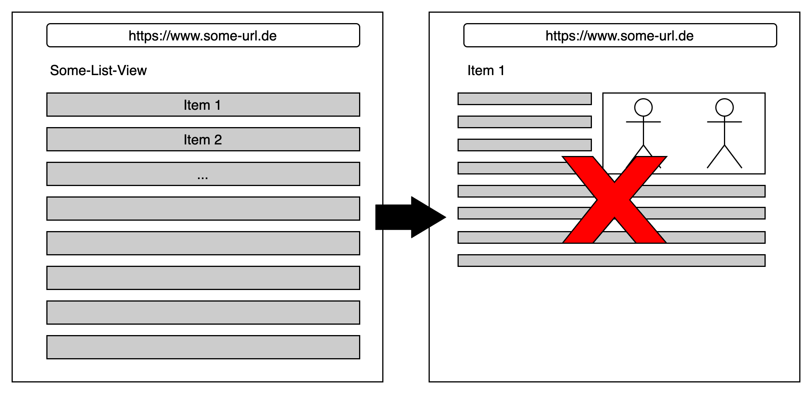
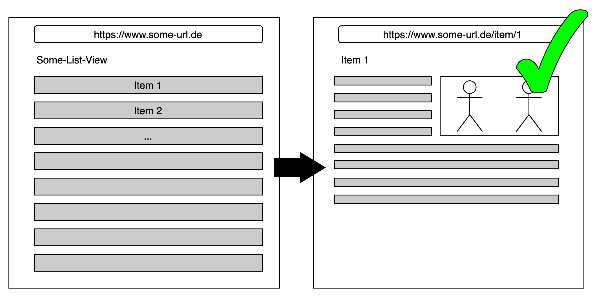

Single Page Application (SPA)
“A single-page application is exactly what its name implies: a JavaScript-driven web application that
requires only a single page load.”
JavaScript - The Definitive Guide
5th ed., O'Reilly, Sebastopol, CA, 2006
Single Page Application Konzept
@startuml
participant "Client" as client
participant "Web Server" as webServer
participant "Web Service" as webService
group Initializing
activate client
client -> webServer: GET /index.html
activate webServer
webServer -> client: index.html
webServer -> client: styles.css
webServer -> client: script.js
deactivate webServer
client -> client: start application
end
group Runtime
client -> webService: GET /some-id
deactivate client
activate webService
webService -> client: some-data
deactivate webService
activate client
client -> client: rerender
end
@enduml
Wieso gibt es SPA's?
Findet ihr Gründe dafür, warum man sowas machen sollte?
- Reduktion der übertragenen Daten
- Bessere User Experience
- Weniger Serverressourcen
- Session Clientseitig (Server ist Stateless)
- Hybride Anwendung auch mobile einsetzbar
Reduktion der übertragenen Daten
<html>
<head>
<link rel="stylesheet" href="style.css">
<script>{javascript}</script>
</head>
<body>
<div>
// some data
</div>
</body>
</html>
Stylesheets
<html>
<head>
<link rel="stylesheet" href="style.css">
<script>{javascript}</script>
</head>
<body>
<div>
// some data
</div>
</body>
</html>
Stylesheets
- enthalten häufig ähnliche Informationen
- könnten einmalig ausgeliefert werden
<style>
label {
font-size: 12pt;
color: blue;
}
input {
font-size: 10pt;
color: green;
height: 10px;
width: 20px;
}
</style>
JavaScript
<html>
<head>
<link rel="stylesheet" href="style.css">
<script>{javascript}</script>
</head>
<body>
<div>
// some data
</div>
</body>
</html>
JavaScript
- ebenfalls repetitiv
- auf mehreren HTML Seiten braucht es gleiche Funktionalität
<script>
function openDropdown() {
// do it
}
function doSomeFancyAnimation() {
// do it
}
</script>
HTML Struktur
<html>
// head
<body>
<header></header>
<nav></nav>
<div>
// some data
</div>
<footer></footer>
</body>
</html>
HTML Struktur
- dynamischer Anteil der Seite beschränkt sich auf Informationen
<html>
// head
<body>
<header></header>
<nav></nav>
<div>
// some data
</div>
<footer></footer>
</body>
</html>
Wieso gibt es SPA's?
- Reduktion der übertragenen Daten
- Bessere User Experience
- Weniger Serverressourcen
- Session Clientseitig (Server ist Stateless)
- Hybride Anwendung auch mobile einsetzbar
Bessere User Experience
- kürzere Response Time
- weniger BE Request notwendig
- Seite ist während eines BE Requests benutzbar
- asynchrones Nachladen der Daten
Wieso gibt es SPA's?
- Reduktion der übertragenen Daten
- Bessere User Experience
- Weniger Serverressourcen
- Session Clientseitig (Server ist Stateless)
- Hybride Anwendung auch mobile einsetzbar
Weniger Serverressourcen
- Rendering läuft auf dem Client
- Geschäftslogik kann auf dem Client laufen
- weniger BE Requests notwendig
- Service kümmert sich nur um die Daten
- nicht um das Rendering
Wieso gibt es SPA's?
- Reduktion der übertragenen Daten
- Bessere User Experience
- Weniger Serverressourcen
- Session Clientseitig (Service ist Stateless)
- Hybride Anwendung auch mobile einsetzbar
Session Clientseitig (Service ist Stateless)
- Service kann Stateless sein
- Skalierbarkeit des Service
- Loadbalancing ist einfacher
Wieso gibt es SPA's?
- Reduktion der übertragenen Daten
- Bessere User Experience
- Weniger Serverressourcen
- Session Clientseitig (Service ist Stateless)
- Hybride Anwendung auch mobile einsetzbar
Hybride Anwendung auch mobile einsetzbar
- SPA's sind ähnlich wie App's
- Doppelentwicklungen können gespart werden
- React Native oder Flutter zeigen wie es geht
- ist nicht immer eine gute Entscheidung!
Nachteile einer SPA
Was könnten Nachteile einer SPA sein?
- initiale Response ist groß
- Client ist nicht Vertrauenswürdig
- duplizierter Code
- höherer Entwicklungsaufwand
Initiale Response ist groß
@startuml
participant "Client" as client
participant "Web Server" as webServer
group Initializing
activate client
client -> webServer: GET /index.html
activate webServer
webServer -> client: index.html
webServer -> client: styles.css
webServer -> client: script.js
deactivate webServer
client -> client: start application
end
@enduml
Nachteile einer SPA
- initiale Response ist groß
- Client ist nicht Vertrauenswürdig
- duplizierter Code
- höherer Entwicklungsaufwand
Client ist nicht Vertrauenswürdig
- JavaScript Code auf dem Client kann manipuliert werden
- erneute Validierung im BE notwendig
- Validierungen sind meist duplizierter Code
- dadurch entsteht mehr Entwicklungsaufwand
- hierfür gibt es Abhilfe:
Routing?
- ist theoretisch nicht notwendig
- Anwendung macht einfach ein rerender

Also kein Routing?
- URL bleibt über die Laufzeit gleich
- teilen eines Links einer bestimmten Ressource?

Routing
- wir brauchen Routing in SPA's doch!
- es passiert ein pseudo Routing
- SPA Frameworks liefern Routing mit oder es gibt Libraries
- dazu später mehr ...
